Enfoque: consumo de café y su vínculo con sueño, estrés y rendimiento (UTEC 2024-2).
Analizar los hábitos de consumo de café de todos los estudiantes de la UTEC durante el periodo académico 2024-2 y su relación con indicadores académicos y percepción del bienestar general.
OE1: Analizar la relación entre el consumo de café y los niveles de estrés percibidos.
OE2: Analizar la relación entre los patrones de sueño y el rendimiento académico.
OE3: Determinar si el ingreso a la universidad ha influido en los hábitos de consumo de café.
Unidad muestral: Cada estudiante de la UTEC en el periodo 2024-2 que consume café.
Muestreo por conveniencia.
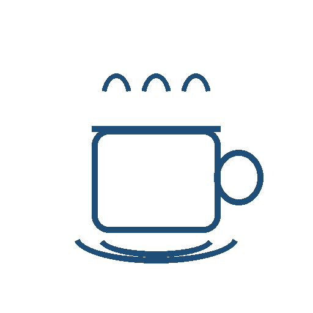
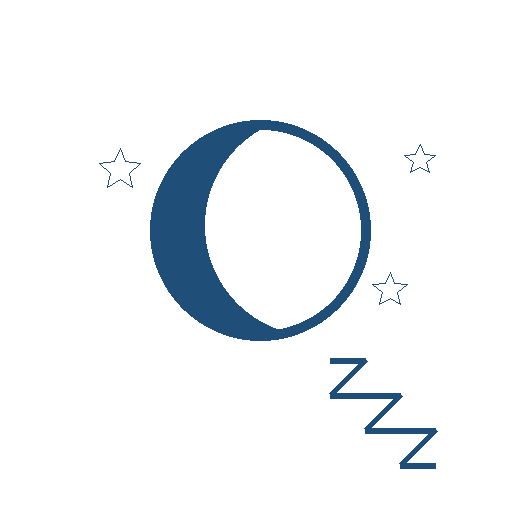
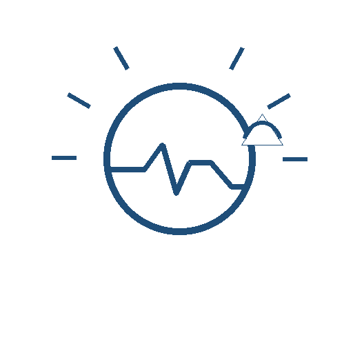
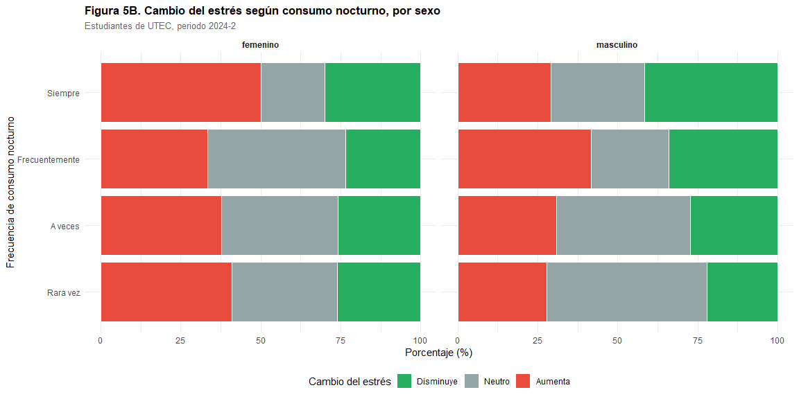
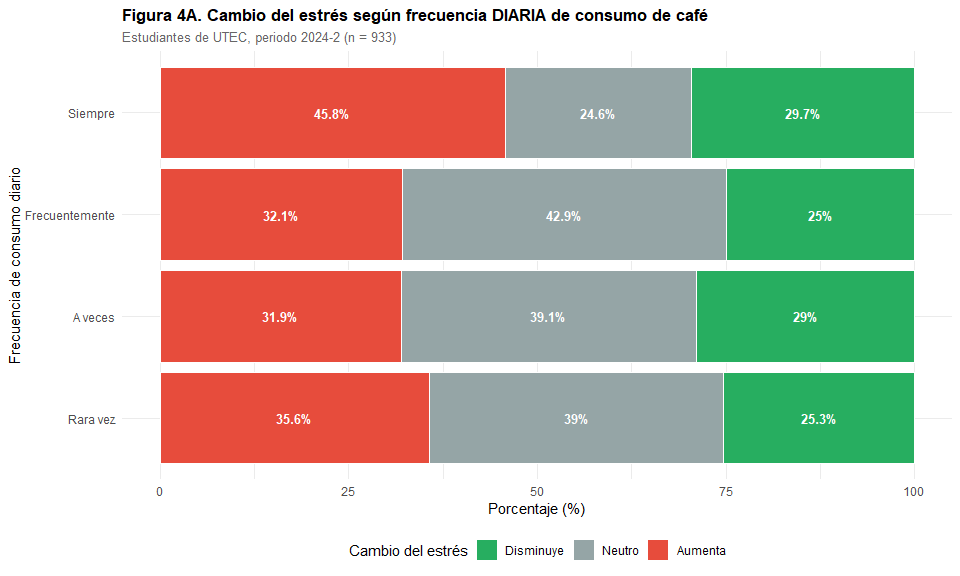
Se observa significancia menor
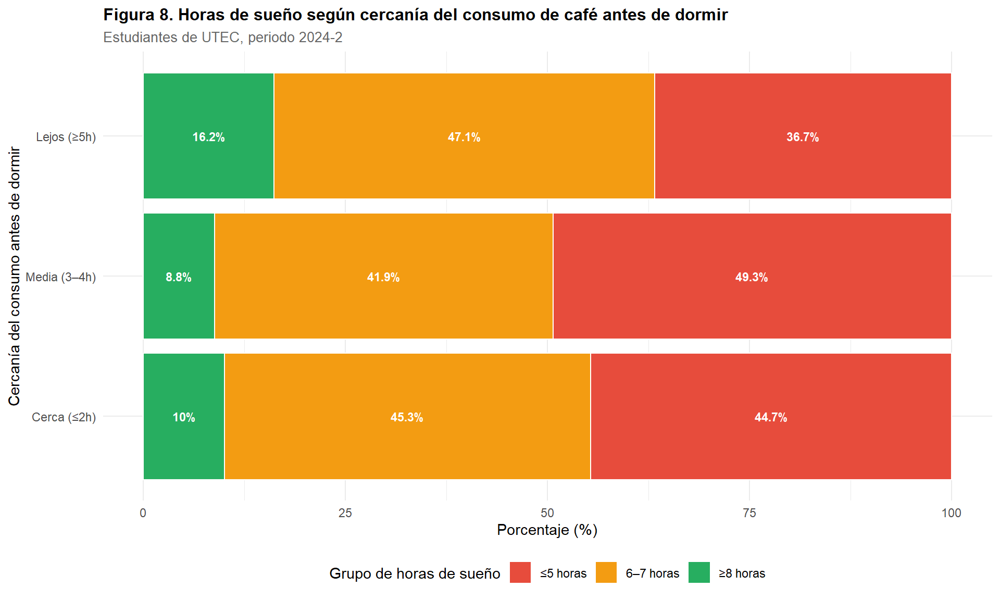
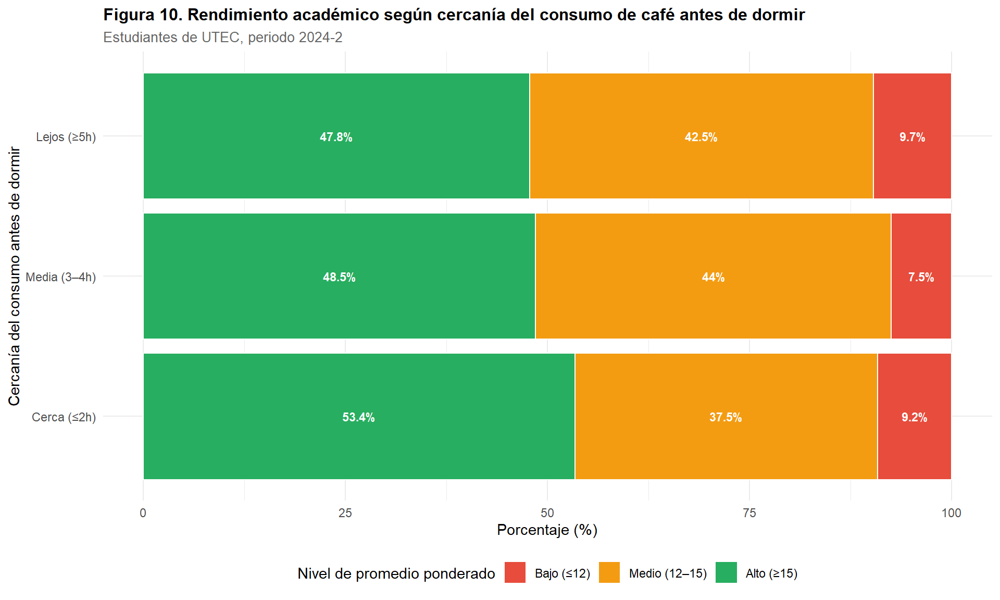
Tabla 6 (resumen): Cambio promedio (tazas/día)
| Cambio | n | Antes | Ahora | Δ |
|---|---|---|---|---|
| Disminuyó mucho | 15 | 5.27 | 3.87 | -1.40 |
| Disminuyó | 43 | 2.72 | 2.60 | -0.12 |
| Sin cambios | 382 | 1.68 | 1.90 | +0.22 |
| Aumentó | 608 | 1.09 | 2.09 | +1.00 |
| Aumentó mucho | 200 | 1.08 | 2.90 | +1.82 |
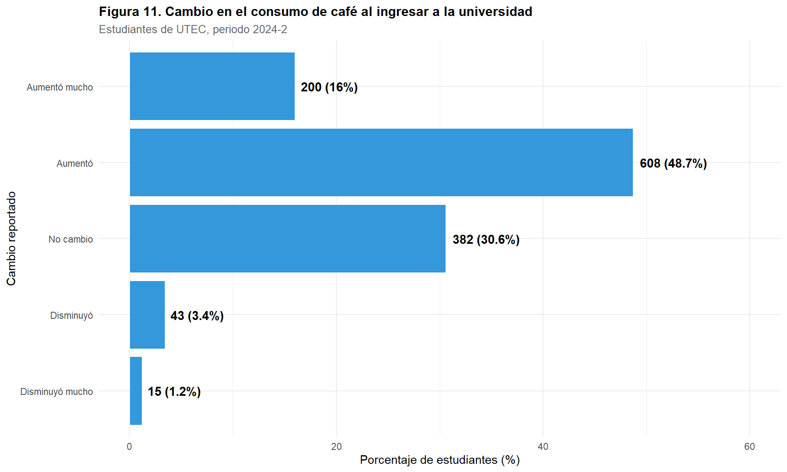
Variable: Frecuencia diaria de consumo
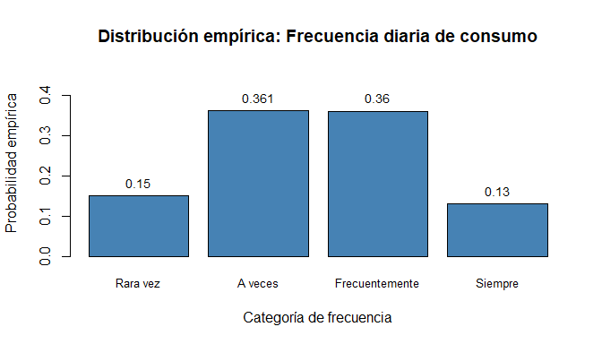
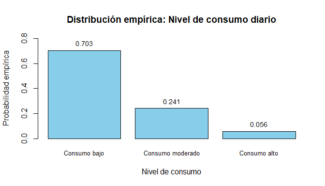
A ocurre si cambio_utec es “Aumentó” o “Aumentó mucho”
B ocurre si energia_1_a_5 es “4” o “5”
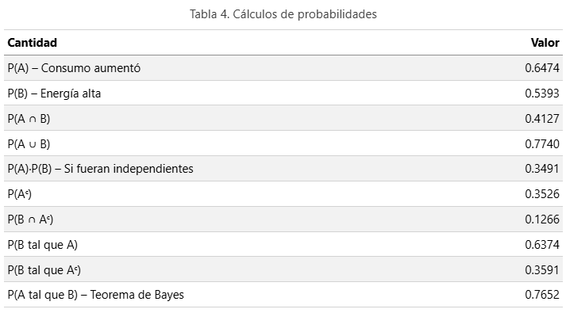
Si se seleccionan 30 unidades muestrales ¿cuál es la probabilidad de que exactamente 10 o al menos la mitad duerman ≥ 7h?
p = P(duerme ≥ 7h) = 0.2893, n = 30, Y = número de estudiantes que duermen ≥ 7h
Y = Binomial(n = 30, p = 0.2893)
Resultados
P(Y = 10, ≤ 5) → 13.33%, 9.62%
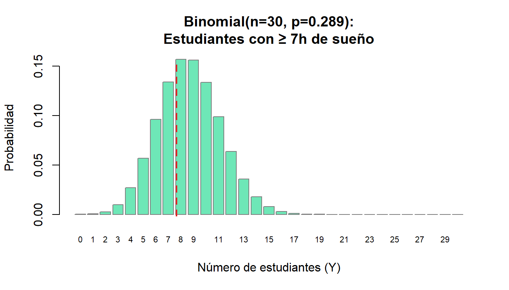
Seleccionamos el promedio ponderado como variable.
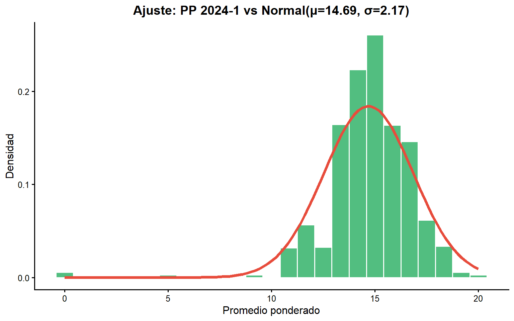
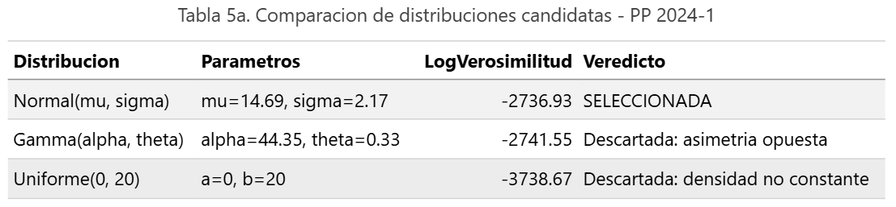
P(13 ≤ Z ≤ 16) = 0.509 P(Z < 11) = 0.0445 en riesgo académico (PP < 11) es del 0.045 P(Z ≥ 17) = 0.1434 rendimiento destacado (PP ≥ 17) es del 0.14 Percentil 75: P₇₅ = 16.15
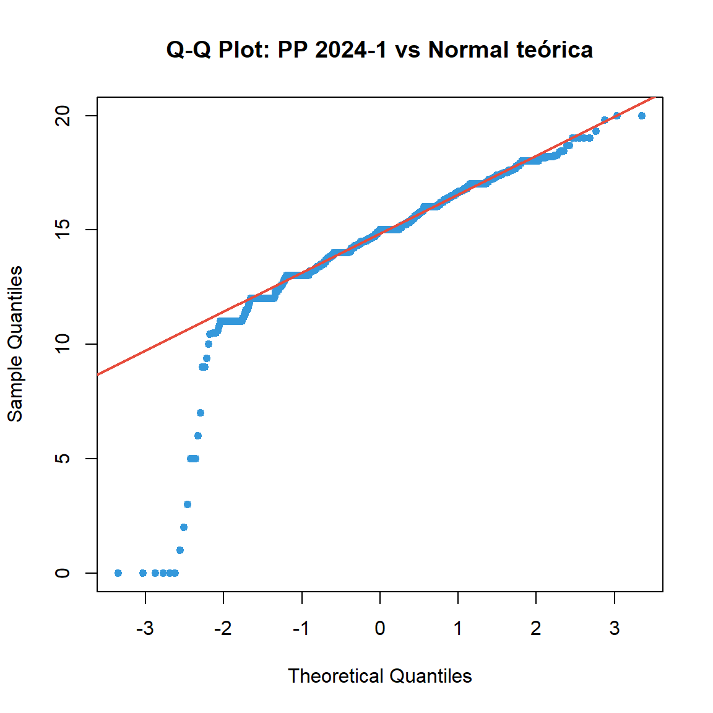
Limitación principal: El Q-Q plot es concluyente: la asimetría observada invalida el supuesto de normalidad.
Limitación del rango: El modelo Normal permite valores fuera de 0,20, lo cual es incongruente con la escala real.